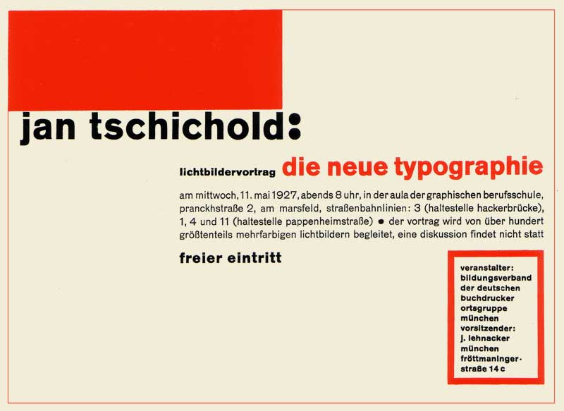

Jan Tschichold
Typographer, Author, Teacher, Cultural Bolshevist
Jan Tschichold (1902 – 1974) was one of the key figures in the development of typography and graphic design in the early 20th century. Born in Germany as the son of a sign painter, he was immersed in typography from a very early age. His contribution to modernism and worship of sans serif fonts seen his work confiscated by the Gestapo “for the protection of the German people”, which eventually seen to his expatriation to Switzerland.
Education
Although having aspirations to pursue fine art at a young age, Tschichold was encouraged by his parents to become an illustration teacher, where he would have stable job prospects. After finishing his schooling he would begin teaching seminars in Grimma, Leipzig district of Germany, his birthplace, at only 14 years of age.
A deep impression, however, was planted in his mind in 1914. At the World’s Fair for Books and Graphics, the young Tschichold found his love for calligraphy in the books of Edward Johnston and Rudolf von Larisch, which covered calligraphy, ornamental script and writing.
At the age of 17 he abandoned his career in teaching to chase his newfound adoration for typographic studies. He enrolled in the Academy for Graphic Arts in Leipzig in 1919.
He studied a range of disciplines such as engraving, bookbinding and woodcutting. But it seemed that his time of study didn’t involve a great deal of learning, his Professor, Hermann Delitsch, said that there was nothing he could teach Tschichold that he wasn’t already aware of. Tschichold had quickly become a favorite student of the Professor, who gave him free reign over his studies.
In 1921, the director of the academy, von Tiemann, eventually asked Tschichold to take evening classes in scriptwriting, and also gave his star student his own studio.
The Influence of the Bauhaus
In his early years, Tschichold had actually become immersed in serif fonts. He adored one of the first fonts to be created by German typographer Rudolf Koch, Maximillian Grotesk, a font very reminiscent of black letter. Tschichold began to collect old script master books, notably that from Pierre Simon Fournier and would use his calligraphic skills to earn commission for his contributions to the Leipzig trade fairs where he would create advertisements.
Taking into consideration the admiration he had for this old-school type, it would be an understatement to say that Tschichold was fascinated by the display of work he seen at the Bauhaus exhibition in 1924.
The young designer’s sudden change of heart seen him jump from his passion for black letter and scripts to straight edge letters, composed of simple shapes with an absence of flares. He quickly began to resent the style of type that he held in high esteem less than a month ago. He was so mesmerized by the work of Russian constructivist artists at the event that he assumed a Slavic nom-de-plume Ivan Tschichold.
A year after beginning his profession as a typography designer, Tschichold designed a poster for Warsaw based publisher Philobiblon in 1924. This would serve as one of Tschichold’s most renowned pieces. He understood himself as a typography designer, a profession that had not existed beforehand and would also see itself as an innovator in modernist graphic design.
With his new ideals firmly established, Tschichold led a militaristic betrayal against his old principles. If it was not set in a sans serif, or had symmetrical properties that resembled the norm of the time, it was simply unacceptable. He believed in defying the old established rules was the key to typography’s own revolution.
In 1925 he featured in a special edition of the design magazine ‘Typographic News’ with a manifest that divided and provoked chaos in the design community. Whether it was viewed in a positive or negative light, Tschichold’s name resonated in the mind of every typesetter of the era. The key principles he laid out were:
- The new typography is purposeful
- The purpose of all typography is communication
- Communication must be made in the shortest, simplest, most definite way

The New Typography
Tschichold would move to Berlin in 1926 after designing a number of covers for the Insel publishing firm in Leipzig. A short time later Paul Renner, another renowned German typeface designer who is recognized for creating the Futura font, contacted him. Initially Renner enquired whether Tschichold was interested in filling the vacancy he was leaving at the Frankfurt School of Applied Arts.
This correspondence actually led to Tschichold moving to Munich where Renner was establishing the new Munich master school. Tschichold began teaching calligraphy and typography here in 1926. Within the following year he would create a number of film posters for the Munich based Phoebus Palace cinema.
1928 saw the publication of his first and, perhaps, most significant book The New Typography. The instructional book became widely praised and its strict standards helped significantly with the careers of many new and aspiring typeface designers. It dropped the many restrictions imposed by old typography and deconstructed the need for centred type and ornaments. The key features of the new typography were sans serif fonts, asymmetric composition and white space.
“White space is to be regarded as an active element, not a passive background.”
Tschichold would move to Berlin in 1926 after designing a number of covers for the Insel publishing firm in Leipzig. A short time later Paul Renner, another renowned German typeface designer who is recognized for creating the Futura font, contacted him. Initially Renner enquired whether Tschichold was interested in filling the vacancy he was leaving at the Frankfurt School of Applied Arts.
“The essence of the New Typography is clarity. This puts it into deliberate opposition to the old typography whose aim was ‘beauty’.”
Tschichold ultimately moved to Munich where Renner was establishing the new Munich master school. Tschichold began teaching calligraphy and typography here in 1926. Within the following year he would create a number of film posters for the Munich based Phoebus Palace cinema.
Disgruntled traditional designers were not the only ones to be irritated at Tschichold’s avant-garde approach to type design. He was put under the spotlight of the Nazi officials who coined him and Paul Renner as “Cultural Bolshevists” for their opposition to traditional black letter type and discouraging German values.
This eventually saw the Nazi secret police raiding his flat in 1933 where they would find a number of Russian posters, posing Tschichold as a Communist sympathiser. He and his wife were imprisoned for a short period of time. With his job lost, Tschichold had no choice but to seize the opportunity to escape Nazi Germany to Switzerland with the help of a policeman.
For a famed designer such as himself, Tschichold found the transition from his homeland to Basel, Switzerland anything but easy. Financial problems, a lack of interesting work and the hazard of losing his job or residence at any time as a foreigner troubled him.
Ironically, after his audacious tirade against the old typography, Tschichold found himself drawn back to it once he had experienced the dictatorial nature of the Nazis against his own unconventional approach to new typography.
Tschichold condemned his old way of thinking as “Fascistic” and believed it was no better than the attitude the Nazis showed towards him. He began to understand that different projects called for different answers. Soon, serif typefaces, centred type and ornaments began to appear in his work. The firm grip upon the principles he picked up at Bauhaus had been relaxed.
Arguably the most influential work of his lifelong career was his contribution to Penguin Books in London. Following World War II, Tschichold moved there in in 1946 at the invitation of Allen Lane, the founder of the company.
Penguin Books were far from unsuccessful as a business; however, they realized that the design of their books had to be revamped. This was obviously the purpose of bringing in Tschichold, to lay out a design model that each book must follow meticulously.
Penguin Books were far from unsuccessful as a business; however, they realized that the design of their books had to be revamped. This was obviously the purpose of bringing in Tschichold, to lay out a design model that each book must follow meticulously.
His first mission was to create a guide that would specify the exact margins, punctuation and italics to abide by. His demanding and unapologetic nature raised the quality of the books ten-fold. With the workforce carefully instructed by their new boss, Tschichold moved on to redesign the book covers. A number a revisions followed which seen the logo being recreated, font size reduced and eventually the book sizes were reduced while still sustaining the golden ratio.
Although only spending a few years in London, Tschichold gained huge respect from typeface designers and printers alike. He was made an honorary member of the London Double Crown Club, a tightknit community of printers in England.
Following his accomplishments in London, Tschichold moved back to Switzerland at the end of 1949. He continued his career and in the following years would write another number of books. Among these books were one of his most popular - “Master Book of Typefaces” and his most widely translated “Arbitrary Measurement Relations of the Book Page”. He would also give various talks around the world and went as far as Chicago in 1967 where he also visited Harvard and Yale universities.
It was during this time in the USA where Tschichold was able to increase the exposure of his very own font that he had developed in the previous years – Sabon.
Modeled on the 1952 Garamond interpretation he was influenced by as a young designer, Sabon instantaneously became a classic and was easily his most important typeface creation. In 1967 Linotype, Monotype and Stempel foundries would print Sabon.
Tschichold leaves a legacy of leading the advancement of old typography into modern, efficient typography in the face of many conservative opponents. His work lives on through the digital releases of Sabon, sold by Adobe and Linotype.
Top